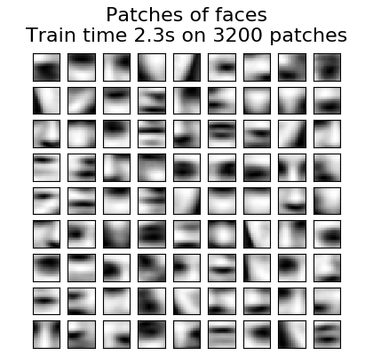

Note
Click here to download the full example code or run this example in your browser via Binder
1.6.5. Online learning of a dictionary of parts of faces¶
This example uses a large dataset of faces to learn a set of 20 x 20 images patches that constitute faces.
From the programming standpoint, it is interesting because it shows how
to use the online API of the scikit-learn to process a very large
dataset by chunks. The way we proceed is that we load an image at a time
and extract randomly 50 patches from this image. Once we have accumulated
500 of these patches (using 10 images), we run the
partial_fit method
of the online KMeans object, MiniBatchKMeans.
The verbose setting on the MiniBatchKMeans enables us to see that some clusters are reassigned during the successive calls to partial-fit. This is because the number of patches that they represent has become too low, and it is better to choose a random new cluster.
Out:
Learning the dictionary...
Partial fit of 100 out of 2400
Partial fit of 200 out of 2400
[MiniBatchKMeans] Reassigning 16 cluster centers.
Partial fit of 300 out of 2400
Partial fit of 400 out of 2400
Partial fit of 500 out of 2400
Partial fit of 600 out of 2400
Partial fit of 700 out of 2400
Partial fit of 800 out of 2400
Partial fit of 900 out of 2400
Partial fit of 1000 out of 2400
Partial fit of 1100 out of 2400
Partial fit of 1200 out of 2400
Partial fit of 1300 out of 2400
Partial fit of 1400 out of 2400
Partial fit of 1500 out of 2400
Partial fit of 1600 out of 2400
Partial fit of 1700 out of 2400
Partial fit of 1800 out of 2400
Partial fit of 1900 out of 2400
Partial fit of 2000 out of 2400
Partial fit of 2100 out of 2400
Partial fit of 2200 out of 2400
Partial fit of 2300 out of 2400
Partial fit of 2400 out of 2400
done in 2.08s.
print(__doc__)
import time
import matplotlib.pyplot as plt
import numpy as np
from sklearn import datasets
from sklearn.cluster import MiniBatchKMeans
from sklearn.feature_extraction.image import extract_patches_2d
faces = datasets.fetch_olivetti_faces()
# #############################################################################
# Learn the dictionary of images
print('Learning the dictionary... ')
rng = np.random.RandomState(0)
kmeans = MiniBatchKMeans(n_clusters=81, random_state=rng, verbose=True)
patch_size = (20, 20)
buffer = []
t0 = time.time()
# The online learning part: cycle over the whole dataset 6 times
index = 0
for _ in range(6):
for img in faces.images:
data = extract_patches_2d(img, patch_size, max_patches=50,
random_state=rng)
data = np.reshape(data, (len(data), -1))
buffer.append(data)
index += 1
if index % 10 == 0:
data = np.concatenate(buffer, axis=0)
data -= np.mean(data, axis=0)
data /= np.std(data, axis=0)
kmeans.partial_fit(data)
buffer = []
if index % 100 == 0:
print('Partial fit of %4i out of %i'
% (index, 6 * len(faces.images)))
dt = time.time() - t0
print('done in %.2fs.' % dt)
# #############################################################################
# Plot the results
plt.figure(figsize=(4.2, 4))
for i, patch in enumerate(kmeans.cluster_centers_):
plt.subplot(9, 9, i + 1)
plt.imshow(patch.reshape(patch_size), cmap=plt.cm.gray,
interpolation='nearest')
plt.xticks(())
plt.yticks(())
plt.suptitle('Patches of faces\nTrain time %.1fs on %d patches' %
(dt, 8 * len(faces.images)), fontsize=16)
plt.subplots_adjust(0.08, 0.02, 0.92, 0.85, 0.08, 0.23)
plt.show()
Total running time of the script: ( 0 minutes 3.178 seconds)